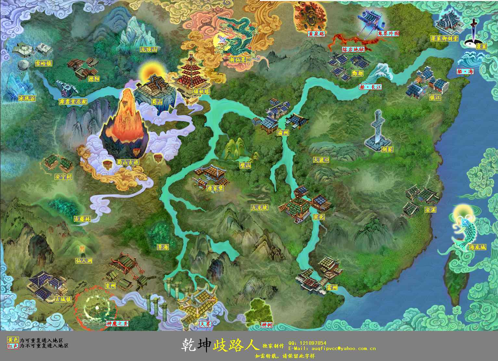
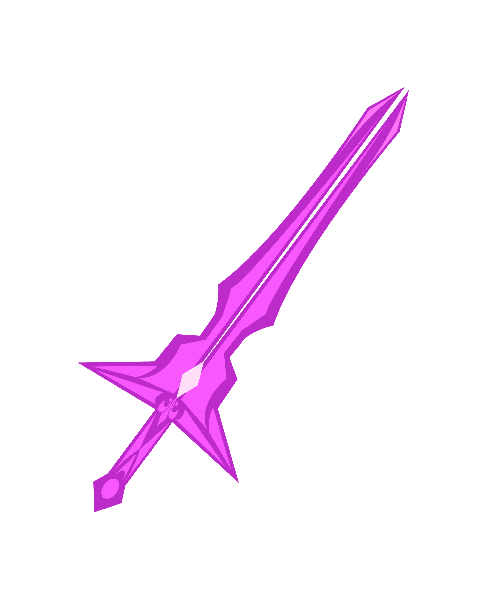

<%--
  Created by IntelliJ IDEA.
  User: jiafurong
  Date: 2021/7/31
  Time: 下午8:09
  To change this template use File | Settings | File Templates.
--%>
<%@ page contentType="text/html;charset=UTF-8" language="java" %>
<html>
<head>
  <title>$御剑飞行大地图$</title>
  <style>
    a{
      float: left;
      margin-left:30px;
      margin-top: 50px;
    }
    img{
      width:300px;
      border:lightskyblue 1px solid;
    }
    #shushan{
           position: absolute;
           display: none;
         }
    #tianjie{
      position: absolute;
      display: none;
    }
  </style>

  <script language=JavaScript>
    function displayImg(idName) {
      var img = document.getElementById(idName);

      var x = event.clientX + document.body.scrollLeft - 20;
      var y = event.clientY + document.body.scrollTop - 100;
      img.style.left = x + "px";
      img.style.top = y + "px";
      img.style.display = "block";
    }
    //图片消失
    function vanishImg(idName){
      var img = document.getElementById(idName);
      img.style.display = "none";
    }
  </script>

</head>

<body>
欢迎来到御剑飞行大地图！

<div style="position:relative;">

  

  <!--img src="zgt.jpg" style="z-index: 100; width:50px;position:absolute; bottom: -5px;left:40%; top:50%" onmouseover="mouseOverPic('stanford.jpg'); bigPic.style.visibility='visible'" onmouseout="mouseOutPic()"-->
  
  

  <!--style="visibility:hidden; "-->
  <div id="shushan">
    
  </div>
  <div id="tianjie">
  
  </div>
</div>
</body>
</html>


